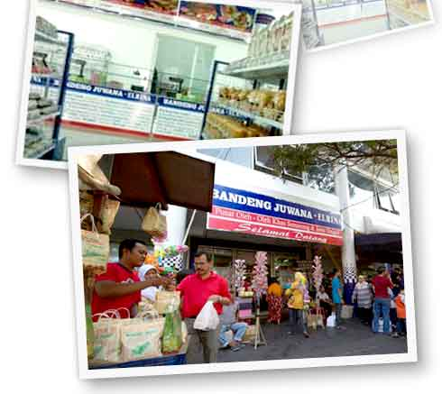

Bandeng Presto Pojok Kendal adalah sebuah pusat oleh-oleh di kota Semarang yang tidak hanya menjual makanan oleh-oleh khas Semarang seperti Bandeng Duri Lunak, Wingko, Moaci dan Lunpia tetapi kami juga menyediakan aneka macam makanan oleh-oleh khas Jawa Tengah seperti Enting-Enting Gepuk, Tahu Bakso, Bakpia dan masih banyak lagi.
Produk andalan Bandeng Pojok Kendal yaitu Bandeng Duri Lunak diproses dari Bandeng segar pilihan sehingga menghasilkan suatu produk yang berkualitas. Bandeng juga kami olah menjadi aneka sajian Bandeng yang tak kalah lezatnya seperti Otak-otak Bandeng, Bandeng Asap, Bandeng Goreng Telur, Bandeng Teriyaki dan masih banyak berbagai pilihan sesuai selera.
Untuk menambah kenyamanan berbelanja tersedia Waroeng Bandeng Presto Pojok Kendal . Bandeng, dan lain-lain yang tentunya akan semakin menambah pengalaman wisata kuliner Anda.